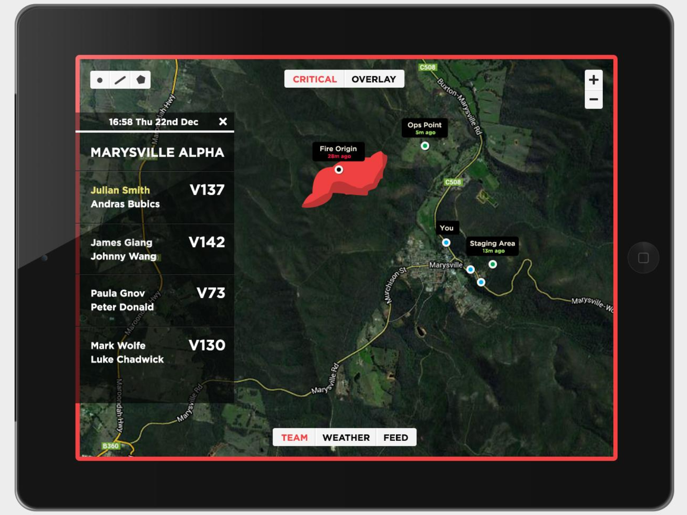
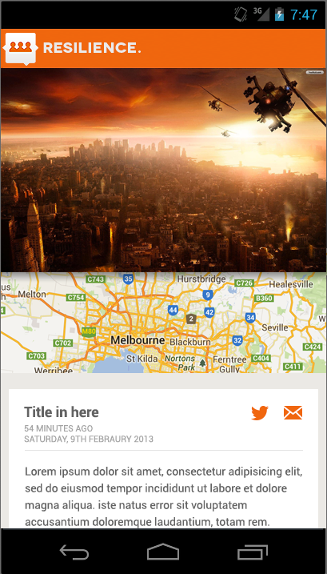
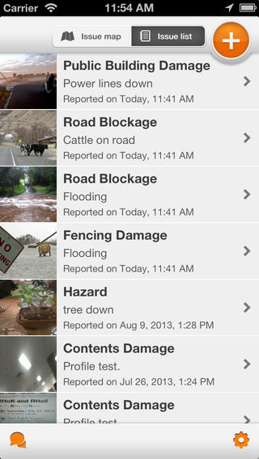
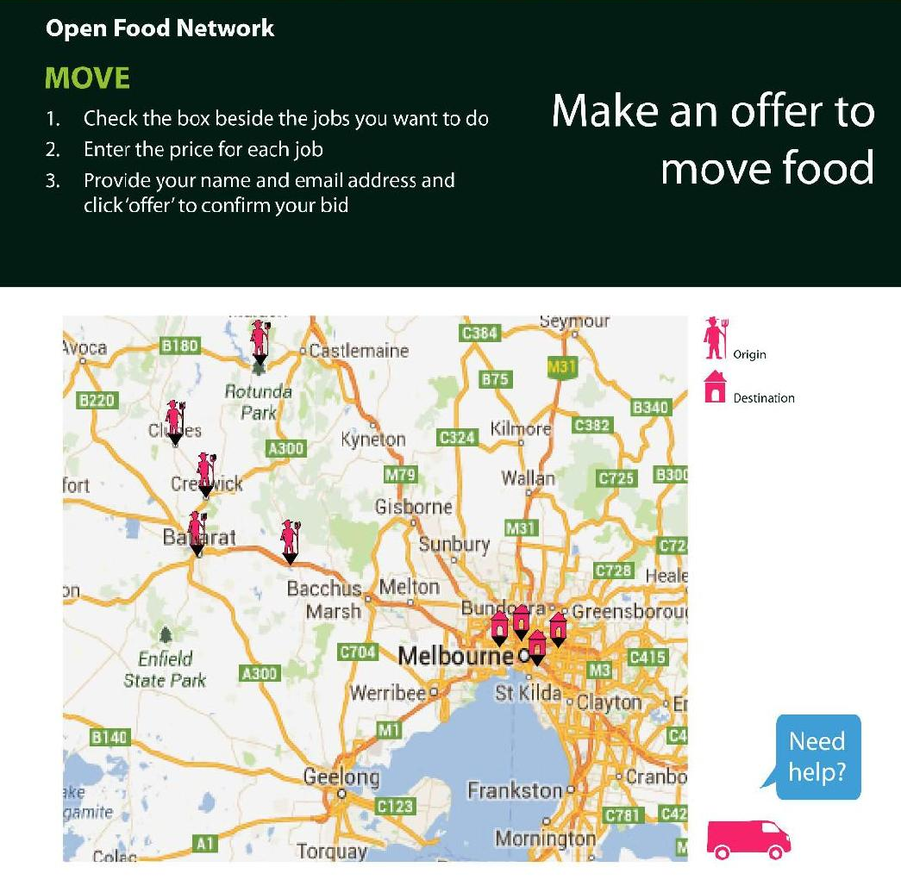

RHoK
- Random Hacks of Kindness
Hack weekend
2 days to design and develop a solution to a community problem
Hack weekend
- Similar to Gov Hack, Space Apps Challenge, Angelhack...
But different...
- less emphasis on competition
- more emphasis on collaboration
Past projects...
FGIS - Fire ground information system

Past projects...
Resilience
 
Past projects...
Open Food Foundation

Why
Work with people that are...
- interesting
- diverse
- and who care...
Why
Create value
Why
learn
- people with different skills
- people from different industries
Who
all types of skills and experience:
- mobile
- web
- embedded
- designers
- ba
- lawyers
When
7th & 8th of December
Where
Swinburne University
More Info
@rhokmelb